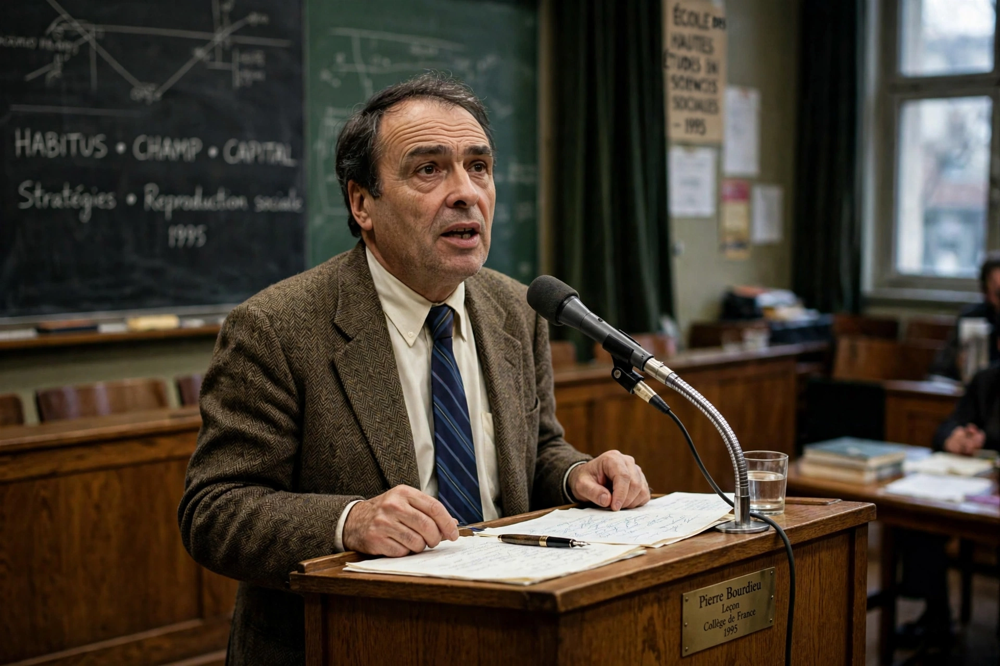

Pierre Bourdieu
From Wikipedia, the free encyclopedia

Pierre Bourdieu (1 August 1930 – 23 January 2002) was a French sociologist, anthropologist and philosopher, among the most influential and cited social scientists of the twentieth century. His work theorised how power and privilege reproduce themselves through culture and practice, via the concepts of habitus, capital (economic, cultural, social, symbolic), field and symbolic violence, in works including Distinction (1979), The Logic of Practice (1980) and The State Nobility.
Life
Born in rural Béarn to a postal worker's family, Bourdieu reached the École Normale Supérieure, did fieldwork in Algeria during its war (1958–61) — the crucible of his theory of practice — and built his school at the École des Hautes Études and the Collège de France (chair 1981). His empirical studies of education (The Inheritors, 1964; Reproduction, 1970) showed schools consecrating inherited advantage as merit.
Theory and politics
Habitus — embodied, durable dispositions acquired through upbringing — generates practices within fields (art, academia, law) whose stakes are forms of capital; doxa and symbolic violence naturalise the order. Late in life Bourdieu turned public intellectual against neoliberalism (The Weight of the World, 1993; Acts of Resistance, 1998), becoming the French anti-globalisation movement's scholar-hero, disputed by critics for determinism and prose alike but unavoidable in his fields.